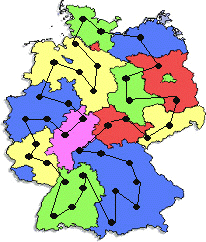
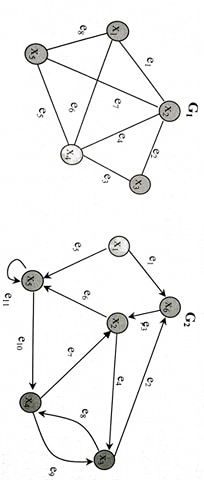
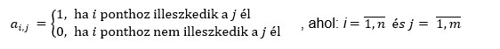

Egy interaktív és modern gráf oktató applikáció
Applikáció megnyitása
Mire használjuk a gráfokat?
A gráfok segítségével nagyon jól lehet szemléltetni a matematika, informatika sokrétű alkalmazását. Meglepőnek tűnhet, hogy ezeken kívül például az iparban, gazdaságban, közlekedésben és különböző szolgáltatásokban is használnak gráfokat. Például, az utazó ügynökök problémája, akik a lehető legrövidebb (legköltséghatékonyabb) útvonalon szeretnének eljutni különböző helyekre. A különböző útvonalak szemléletes megjelenítésére, modellezésére a gráfok tökéletesen alkalmasak.
Más alkalmazások:
- vízhálózatok
- vasútvonal
- családfa
- településeket összekötő utak
- térképek színezése
A Facebook közösségi portálhoz kapcsolható példa segítségével a gráfelmélet alapfogalmai nagyon jól szemléltethetőek.
A Facebook-felhasználók a gráf csúcsai. Bejelölésről vagy megjelölésről akkor beszélhetünk, ha egy személy ismerősnek kér fel egy másik embert. Ebben az esetben a kapcsolat még nem kölcsönös, hanem csak egy irányú, amit irányított élek használatával szemléltethetünk. Az irányított él a bejelölő személy felől a megjelölt személy irányába mutat. Az ismeretségek a gráf (irányítatlan) élei.
Ha az egyik ember megjelöli a másikat vagy felkéri ismerősnek, úgy a kapcsolat még nem kölcsönös viszont ha a megjelölt személy visszajelöli az őt megjelölő személyt, akkor felőle egy irányított él fog az eredetileg megjelölő személy felé mutatni. Így a két csúcs között már két él van, irányuk ellentétes. A Facebook ezt a zavaró helyzetet a két irányított él „összeolvadásával" oldja fel, és egy irányítatlan él keletkezik, a két személy egymás ismerőse lesz. Ha már két személy ismerős, akkor nem lehet visszakövetni, hogy ki kezdeményezte a kapcsolatot.
pl. Minimálisan, hány színt lehet használni úgy, hogy két azonos szín ne legyen egymás mellett.
Alapfogalmak
- Gráf: csomópontokból és az ezeket összekötő élekből áll.
- Szomszédos: egy él és egy pont szomszédos, ha a pont az él végpontja. Két pont szomszédos, ha él köti össze őket.
- Hurokél: olyan él, amely mindkét végpontjával ugyanahhoz a ponthoz illeszkedik.
- Többszörös él: ha két pontot több él is összeköt, többszörös élről beszélünk.
- Független élek: két él független, ha nem szomszédosak.
- Pont fokszáma: a ponthoz illeszkedő élek száma.
- Izolált pont: olyan pont, amelyhez egy él sem illeszkedik.
- Egyszerű gráf: olyan gráf, amely sem hurokélet, sem többszörös élet nem tartalmaz.
- Teljes gráf: olyan egyszerű gráf, amely bármely két különböző pontját él köti össze (bármely pont össze van kötve az összes többivel).
- Kiegészítő gráf: ha egy egyszerű, de nem teljes gráfot kiegészítünk teljes gráffá, akkor a gráf csomópontjait és a kiegészítésül megrajzolt élek az eredeti gráf kiegészítő gráfját adják.
- Részgráf: ha egy gráf bizonyos éleit, esetleg pontjait és a velük szomszédos éleket töröljük, akkor az adott gráf részgráfját kapjuk.
- Összefüggő gráf: egy olyan gráf, amely bármely két pontját út köti össze.
- Összefüggő komponens: ha egy gráf nem összefüggő pontjait olyan csoportokra osszuk, hogy az azonos csoportba eső bármely két pont között létezzen út, de különböző csoportokban levők között ne, akkor az azonos csoportban levő pontok és a hozzátartozó élek összessége a gráf egy összefüggő komponensét alkotják.
- Súlyozott gráf: egy olyan gráf, amelynek minden éléhez súlyt (értéket) rendelünk.
Irányított és nem irányított gráfok
Irányított gráfoknak nevezzük azokat a gráfokat, amelyeket csak az irányok betartásával lehet bejárni, nincs oda-vissza út. (pl. G2)
pl. lehetséges bejárás: x1 e1 x6 e3 x2 e6 x5 e10 x4 e9 x3 e8 x4
x1-ből eljuthatunk x6-ba, viszont fordítva nem az e1 élen keresztül
Nem irányított gráfoknak nevezzük azokat a gráfokat, amelyek nincsenek iránnyal ellátva, és működik az oda-vissza út. (pl. G1)
pl. lehetséges bejárás: x1e1 x2 e7 x5 e8 x1 e6 x4 e3 x3
x1-ből eljuthatunk x2-be és fordítva is az e1 élen keresztül
Gráfok ábrázolási módjai
Illeszkedési mátrix (pont-él mátrix, incidencia mátrix)
Adott egy gráf, amelynek n pontja és m éle van. Az adott gráfhoz hozzárendelhető egy n sorból és m oszlopból álló kétdimenziós tömb az alábbi szabály alapján:
| 1 | 2 | 3 | 4 | 5 | 6 | 7 | 8 | |
|---|---|---|---|---|---|---|---|---|
| 1 | 1 | 0 | 0 | 0 | 0 | 1 | 0 | 1 |
| 2 | 1 | 1 | 0 | 1 | 0 | 0 | 1 | 0 |
| 3 | 0 | 1 | 1 | 0 | 0 | 0 | 0 | 0 |
| 4 | 0 | 0 | 1 | 1 | 1 | 1 | 0 | 0 |
| 5 | 0 | 0 | 0 | 0 | 1 | 0 | 1 | 1 |
| 1 | 2 | 3 | 4 | 5 | 6 | 7 | 8 | 9 | 10 | 11 | |
|---|---|---|---|---|---|---|---|---|---|---|---|
| 1 | 1 | 0 | 0 | 0 | 1 | 0 | 0 | 0 | 0 | 0 | 0 |
| 2 | 0 | 0 | 1 | 1 | 0 | 1 | 1 | 0 | 0 | 0 | 0 |
| 3 | 0 | 1 | 0 | 1 | 0 | 0 | 0 | 1 | 1 | 0 | 0 |
| 4 | 0 | 0 | 0 | 0 | 0 | 0 | 1 | 1 | 1 | 1 | 0 |
| 5 | 0 | 0 | 0 | 0 | 1 | 1 | 0 | 0 | 0 | 1 | 1 |
| 6 | 1 | 1 | 1 | 0 | 0 | 0 | 0 | 0 | 0 | 0 | 0 |
Megjegyzések
- Az i. sorban levő számok összege megadja a sor sorszámának megfelelő xi. pont fokszámát.
- Bármely oszlopban található számok összege 2, mivel bármely élhez 2 pont illeszkedik (kivétel hurokél).
- Irányított gráfok esetén, nagyon sok feladat megoldásánál fontos ismerni az élek irányítását, ezért ilyen esetekben a pontok kezdőpontját 1-gyel, a végpontját pedig -1-gyel jelölhetjük.
- A könnyebb érthetőség és elképzelés érdekében 1-től kezdjük számozni a mátrixokat, mivel az indexek jelölik az csomópontokat.
Éllista
Adott egy gráf, amelynek n pontja és m éle van. Az adott gráfhoz hozzárendelhető egy m sorból és 2 oszlopból álló kétdimenziós tömb, amelynek minden sorában az adott sorszámú él egyik végpontja az első oszlopban, és a másik végpontja a második oszlopban található.
| 1 | 1 | 2 |
|---|---|---|
| 2 | 2 | 3 |
| 3 | 3 | 4 |
| 4 | 2 | 4 |
| 5 | 4 | 5 |
| 6 | 1 | 4 |
| 7 | 2 | 5 |
| 8 | 1 | 5 |
| 1 | 1 | 6 |
|---|---|---|
| 2 | 3 | 6 |
| 3 | 6 | 2 |
| 4 | 2 | 3 |
| 5 | 1 | 5 |
| 6 | 2 | 5 |
| 7 | 4 | 2 |
| 8 | 3 | 4 |
| 9 | 4 | 3 |
| 10 | 5 | 4 |
| 11 | 5 | 5 |
Boole-mátrix (szomszédsági mátrix, adjacenciamátrix)
Adott egy gráf, amelynek n pontja és m éle van. Az adott gráfhoz hozzárendelhető egy n sorból és n oszlopból álló kétdimenziós tömb az alábbi szabály alapján:

| 1 | 2 | 3 | 4 | 5 | |
|---|---|---|---|---|---|
| 1 | 0 | 1 | 0 | 1 | 1 |
| 2 | 1 | 0 | 1 | 1 | 1 |
| 3 | 0 | 1 | 0 | 1 | 0 |
| 4 | 1 | 1 | 1 | 0 | 1 |
| 5 | 1 | 1 | 0 | 1 | 0 |
Megjegyzések
- Nem irányított gráfban az i. sorban és az i. oszlopban található összeg megegyezik az xi pont fokszámával. A mátrix szimmetrikus a főátlóra nézve.
- Nem irányított gráfban az i. sorban és az i. oszlopban található összeg megegyezik az xi pont fokszámával. A mátrix szimmetrikus a főátlóra nézve.
- Irányított gráfban az i. sorban/oszlopban található 1-ek száma megegyezik az xi pont ki/be fokszámával. Ha a főátlón csak zérósok szerepelnek, akkor nincs hurokél.
- Súlyozott gráf esetén az 1-ek helyett az adott él súlyát tüntetjük fel. Nem létező élek esetén, a mátrix megfelelő helyére ∞-t írunk.
Szomszédsági lista (adjacencialista)
Adott egy gráf, amelynek n pontja van. Az adott gráfhoz hozzárendelhető egy n sorból és maximum m oszlopból álló kétdimenziós tömb, amelynek minden sorában az adott sorszámú ponttal szomszédos végpontok sorozata található.
| 1 | 2 | 4 | 5 | |
|---|---|---|---|---|
| 2 | 1 | 3 | 4 | 5 |
| 3 | 2 | 4 | ||
| 4 | 1 | 2 | 3 | 5 |
| 5 | 1 | 2 | 4 |
| 1 | 5 | 6 |
|---|---|---|
| 2 | 3 | 5 |
| 3 | 4 | 6 |
| 4 | 2 | 3 |
| 5 | 4 | 5 |
| 6 | 2 |
Egyes feladatoknál célszerű a 0. oszlopba már beolvasásnál megadni a megfelelő sorban lévő elemek számát, így könnyebben tudunk hivatkozni egy adott elemre. Az alábbi kétdimenzios tömbben, a zölddel színezett oszlopban látható.
| 0 | 1 | 2 | 3 | |
|---|---|---|---|---|
| 1 | 2 | 4 | 6 | |
| 2 | 2 | 3 | 5 | |
| 3 | 3 | 2 | 4 | 7 |
| 4 | 3 | 1 | 3 | 5 |
Átalakítások
Boole-mátrix → Pont-él mátrix
Boole-mátrix → Éllista
Boole-mátrix → Szomszédsági lista
Éllista → Szomszédsági lista
Pont-él matrix → Éllista
Szomszédsági lista → Boole-mátrix
Pont-él matrix → Szomszédsági lista
Szomszédsági lista → Éllista
Szomszédsági lista → Pont-él mátrix
Gráfok bejárása
Szélességi bejárás
út: 1 4 6 3 5 7 2
- Kiválasztjuk a kiinduló csomópontot és elhelyezzük az út tömbben (+freq tömb).
- Az út tömbben elhelyezett minden elem esetén keressük az olyan egy él távolságra helyezkedő szomszédját, amely még nincs benne az út tömbben.
Adatszerkezet
- a gráf tárolása (pl. szomszédsági lista)
- az út tárolása → vektor
- frekvencia tömb
- e – jelöli a feldolgozás alatt levő elem helyét az út tömbben
- u – jelöli az utolsó elem helyét az út tömbben
| 0 | 1 | 2 | 3 | |
|---|---|---|---|---|
| 1 | 2 | 4 | 6 | |
| 2 | 2 | 3 | 5 | |
| 3 | 3 | 2 | 4 | 7 |
| 4 | 3 | 1 | 3 | 5 |
Mélységi bejárás
út: 1 4 3 2 7 6 5
- Kiválasztjuk a kiinduló csomópontot és elhelyezzük az út tömbben (+
freq tömb). - Mindig, a verem tetején elhelyezendő elem esetén kivesszük az olyan egy él távolságra helyezkedő szomszédját, aki nem került még bele az
út tömbbe. - Az algoritmusnak akkor lesz vége, ha visszaléptünk a verem 0. szintjére.
Adatszerkezet
- a gráf tárolása (pl. szomszédsági lista)
- az út tárolása → vektor
- frekvencia tömb
- verem adatszerkezet → vektor
- e – jelöli, hogy hol van az éppen feldolgozás alatt álló elem a veremben
| 0 | 1 | 2 | 3 | |
|---|---|---|---|---|
| 1 | 2 | 4 | 6 | |
| 2 | 1 | 3 | ||
| 3 | 3 | 2 | 4 | 7 |
| 4 | 2 | 1 | 3 | |
| 5 | 1 | 6 | ||
| 6 | 2 | 1 | 5 | |
| 7 | 1 | 3 |
Útmátrix
Egy adott gráfhoz hozzárendelhető egy n sorból és oszlopból álló kétdimenzióstömb, a következő szabályok alapján:

- Az útmátrix meghatározására a Roy-Warshall algoritmust használjuk. Az algoritmus meghatározza az adott gráfban található sétákat, tehát azt, hogy egy pontból eljuthatunk-e egy másikba.
- A gráfot boole-mátrix segítségével tároljuk.
| 1 | 2 | 3 | 4 | 5 | 6 | 7 | |
|---|---|---|---|---|---|---|---|
| 1 | 1 | 1 | 1 | 1 | 1 | 1 | 1 |
| 2 | 1 | 1 | 1 | 1 | 1 | 1 | 1 |
| 3 | 1 | 1 | 1 | 1 | 1 | 1 | 1 |
| 4 | 0 | 0 | 0 | 1 | 0 | 1 | 1 |
| 5 | 1 | 1 | 1 | 1 | 1 | 1 | 1 |
| 6 | 0 | 0 | 0 | 1 | 0 | 1 | 1 |
| 7 | 0 | 0 | 0 | 1 | 0 | 1 | 1 |
Legrövidebb utak meghatározása
Adott egy élsúlyozott irányított gráf. Határozzuk meg a legrövidebb (legkisebb költségű) utak hosszát egy adott csomópontból a többibe.
Dijkstra algoritmusa
- Kiválasztjuk a kiinduló csomópontot.
- Használunk egy uth tömböt, amelyet feltöltünk a direkt élek hosszával, illetve 0-át a kezdő csomópont helyére, a többibe pedig egy nagyon-nagy értéket helyezünk.
- Használunk egy frekvencia tömböt (freq), amelyben megjegyezzük, hogy egy adott csomópontból próbált-e már továbblépni.
uth: 8 0 ∞ ∞ 1 ∞
freq: 0 0 0 0 0 0
uth: 6 0 3 3 1 9
freq: 1 1 1 1 1 1
Minimális feszítőfák
A feszítőfa egy olyan fa, ami a gráf összes csúcsát tartalmazza és élei az eredeti gráf élei közül valók. A minimális feszítőfa egy összefüggő, irányítatlan gráfban található legkisebb élsúlyú feszítőfa. Egy gráf tetszőleges minimális feszítőfájának keresésére használható Kruskal és Prim algoritmusa.
Kruskal algoritmusa
- Rendezzük az éllistát az élek súlya szerint.
- A csomópontokat külön komponensekbe helyezzük el.
- Feldolgozzuk az éllistát, és ha egy él két olyan csomópontot köt össze, amelyek más-más komponensekhez tartoznak, kiválasztjuk, mint a feszítőfa éle.
Adatszerkezet
- éllista a gráf ábrázolására
- egy egydimenziós tömb, amelynek n eleme van, azzal a jelentéssel, hogy a csomópontok melyik komponenshez tartoznak
| 1 | 2 | 3 | |
|---|---|---|---|
| 1 | 1 | 4 | 2 |
| 2 | 3 | 5 | 2 |
| 3 | 4 | 6 | 2 |
| 4 | 5 | 6 | 2 |
| 5 | 2 | 5 | 3 |
| 6 | 3 | 4 | 3 |
| 7 | 3 | 6 | 3 |
| 8 | 1 | 6 | 4 |
| 9 | 2 | 3 | 4 |
| 10 | 1 | 2 | 5 |
Prim algoritmusa
feszítőfa: 3 5 6 4 1 2
- Meghatározzuk a kezdő csomópontot, elhelyezzük a fába.
- Meghatározzuk a fában elhelyezett csomópontból azt a kiinduló legkisebb súlyú élet, amely egy olyan csomóponthoz kapcsolódik, amely még nincs a fában. Kiválasztjuk ezt az élet és csomópontot, majd elhelyezzük a fába.
Adatszerkezet
- éllista súlyokkal
- n elemű vektor a fa csomópontjainak
- v[i] = 0, az i csomópont nincs a fában
- v[i] = 1, az i csomópont a fában van
A fák típusai
Ha egy gráf összefüggő és nem tartalmaz kört, akkor azt fának nevezzük.
- Nyílt fák
A nyílt fa egy összefüggő, körmentes, nem irányított gráf. Ha egy irányítatlan gráf körmentes, akkor erdőnek nevezzük.
- Gyökeres fák
Gyökeresnek nevezzük az olyan fákat, amelyekben az egyik csomópontnak kitüntetett szerepe van a többihez képest, ezt a csomópontot gyökérnek nevezzük.
Jellemzők:
- szint: azt jelöli, hogy egy csomópont hány él távolságra van a gyökértől (a gyökér tetszés szerint és feladattól függően lehet a 0. vagy az 1. szinten)
- magasság: a gyökér és a tőle legtávolabb eső csomópont közötti élek száma → pl. 4
- leszármazott; ős → pl. 3 őse az 1 csp
- közvetlen (direkt) leszármazott: 1 él távolságra levő leszármazott
- levél: olyan csomópont, amelynek nincs leszármazottja → pl. 4 5 8 9 11 12 13
- gyökér: olyan csomópont, amelynek nincs szülője → 1
- Bináris fák
A bináris fa olyan fa, amelyben bármely csomópontnak legtöbb 2 direkt leszármazottja lehet.
Gyökeres fák ábrázolása
- Apa tömb
- Teljes zárójeles alak
Minden csúcsnak a direkt ősét egy egydimenziós tömb segítségével adjuk meg. A vektor indexe a csomópont, tartalma pedig jelöli azt a csomópontot, amelyhez kapcsolódik.
A gyökértől kiindulva zárójelekbe helyezzük a leszármazottakat. Ha valamelyik csomópontnak csak egy leszármazottja van, *-ot írunk a másik helyére.
pl. a.) ábra 1 ( 2( 5(*) ), 3( 6(8(*) ), 7(9(*), 10(13(*)), 11(*), 12(*))), 4(*) )
Bináris fák ábrázolása
- Apa tömb
- Teljes zárójeles alak
- Bináris fa standard alakja
- Bináris fa bináris alakja
Minden csúcsnak a direkt ősét egy egydimenziós tömb segítségével adjuk meg.
A gyökértől kiindulva zárójelekbe helyezzük a leszármazottakat. Ha valamelyik csomópontnak csak egy leszármazottja van, *-ot írunk a másik helyére.
pl. b.) ábra 1 ( 2(4(8,*), 5), 3(6(9,10(11,12)), 7(*,13)) )
Minden egyes csomópontnak a jobb- és baloldali leszármazottját egy-egy egydimenziós tömb, vagy egy 2 soros és n oszlopú mátrix segítségével adjuk meg.(n - csomópontok száma)
A bináris fák csomópontjait 0-1 sorozatoknak tekinthetjük. A gyökeret „1” jelöli. Ha a egy csomópont jelölése, akkor a bal és a jobb leszármazottjait (ha van) a0-val és a1-gyel jelöljük.
pl. (1,1) (2,10) (3,11) (4,100) (5,101) (6,110) (7,111) (8,1000) (9,1100) (10,1101) (11,11010) (12,11011) (13,1111)
Bináris fák bejárása
- Preorder (gyökérkezdő) bejárás: gyökér, bal, jobb
- Inorder (gyökérközepű) bejárás: bal, gyökér, jobb
- Postorder (gyökérvégző) bejárás: bal, jobb, gyökér
pl. D A C K G P L B F O M I H
pl. C A G K P L D F O B I M H
pl. C G L P K A O F I H M B D
Bináris keresőfa
Bármely bal oldali részfa minden csomópontja kisebb, mint a gyökere.
Bármely jobb oldali részfa minden csomópontja nagyobb, mint a gyökere.